足りない機能は即席ツールを作りながらモデルを作ってみる。
[0] 部品構成
・下図のような cap, 曲げたパイプ(pipe1), 細らせて曲げたパイプ(pipe2) を作成してつなげる。
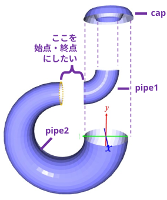
・パイプを細らせたり, 曲げたりは PLY_interactive.py では思ったようにできなかったので、即席の外部ツールで対応する。
[1] キャップを作る
・キャップの断面の座標を手入力し、回転させてキャップを作る。
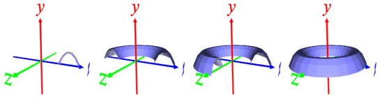
p clear ･･･ Poinst[ ]を空にする
p 1 0 0 ･･･ Poinst[ ]に点 (1, 0, 0)を追加
p 0.9 0.2 0 ･･･ Poinst[ ]に点 (0.9, 0.2, 0)を追加
p 0.8 0.3 0 ･･･ Poinst[ ]に点 (0.8, 0.3, 0)を追加
p 0.7 0.3 0 ･･･ Poinst[ ]に点 (0.7, 0.3 ,0)を追加
p 0.6 0.2 0 ･･･ Poinst[ ]に点 (0.6, 0.2, 0)を追加
p 0.5 0 0 ･･･ Poinst[ ]に点 (0.5, 0, 0)を追加
p r 0 360/30 0 30 ･･･ Points[ ]内の点に回転を30回適用
⇒ 履歴が P2[ ] に格納される
P2[ ] の内容は表示されない
surface eclose ･･･ P2[ ]の内容を可視化する
p2 save cap.npy ･･･ P2[ ]の内容を cap.npy として保存する
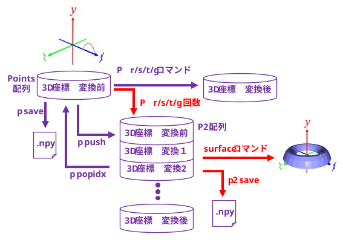
[2] パイプ 1 を作る
cap.npy を読み込んで path 方向と extrusion 方向を入れ替える。
※ path 方向, extrusion 方向はテキトーにつけた名称。u, v の方が良かったかも。
l cap.npy ･･･ cap.npy をロードする
p2 transpose ･･･ path 方向と extrusion 方向を入れ替える
P2[ ] の最後の要素が Points[ ] にコピーされる
p2 save cap_transposed.npy ･･･ 転置した cap.npy をセーブ
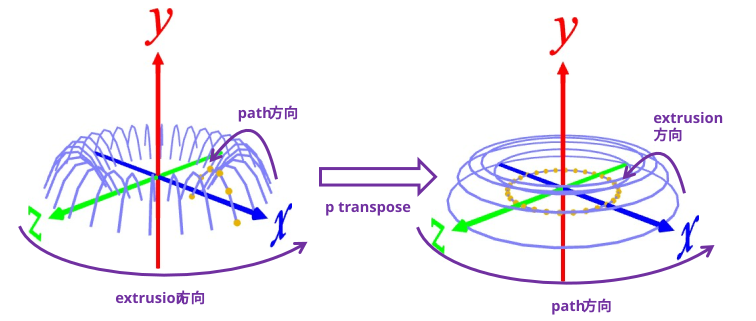
Points[ ] を y 軸下方向に伸ばしてパイプ 1 を作る。
p t 0 -0.2 0 10 ･･･ y 軸方向に -0.2 平行移動を 10 回繰り返す
surface ･･･ P2[ ] の内容を可視化
p2 save pipe1.npy ･･･ P2[ ] の内容を pipe1.npy にセーブ
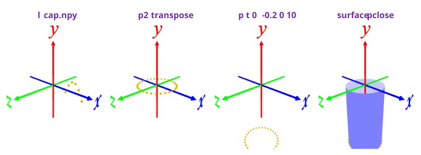
即席のツール (bend.py) で .npy を曲げる
python bend.py (.npy) (曲げ角度)
※ パイプ状のものが y 軸に沿って伸びていることしか想定していない即席ツール。
python bend.py pipe1.npy 90
結果を表示する。
l pipe1_bended.npy
surface pclose
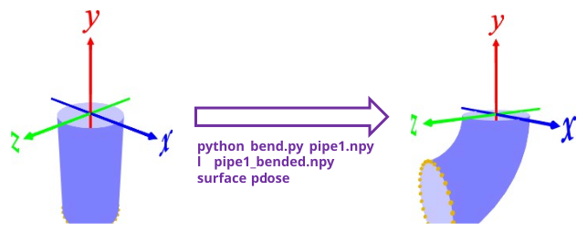
[3] パイプ 2 を作る
転置した cap.npy をロード ⇒ transpose ⇒ 外側の円環を選び, y 軸下方向に伸ばす。
l cap_transposed.npy ･･･ 転置した cap.npy をロードする
p pop 0 ･･･ P2[0] を Points[ ] にコピーする
p t 0 -0,2 0 30 ･･･ Points[ ] をy軸方向に -0.2 移動を 30 回繰り返す
surface pclose ･･･ P2[ ] を可視化する
p2 save pipe2.npy ･･･ P2[ ] を pipe2.npy としてセーブする
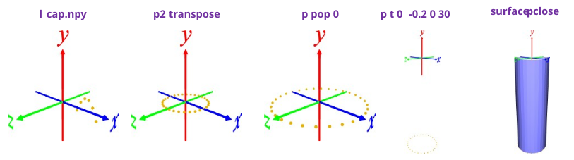
即席ツールでパイプを細らせる。
python thinning.py (.npy) (最終スケール)
※ パイプ状のものが y 軸に沿って伸びていることしか想定していない即席ツール。
python thinning.py pipe2.npy 0.5
即席のツール (bend.py) で .npy を曲げる
python bend.py pipe2_thinned.npy 270
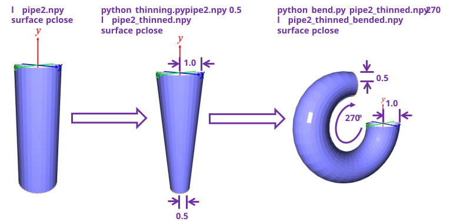
[4] 部品の配置を決める
作成した部品をロードし, surface コマンドでメッシュ化
t (x オフセット) (y オフセット) (z オフセット) ･･･ 部品の配置を調整する
l cap_transposed.npy ･･･ キャップをロード
surface pclose ･･･ メッシュ化
t 0 5 0 ･･･ y軸方向に 5 持ち上げる
l pipe1_bended.npy ･･･ 曲げた pipe1 をロード
surface pclose ･･･ メッシュ化
t 0 3 0 ･･･ y軸方向に 5 持ち上げる
l pipe2_thinned_bended.npy ･･･ 細らせて曲げた pipe2 をロード
surface pclose ･･･ メッシュ化
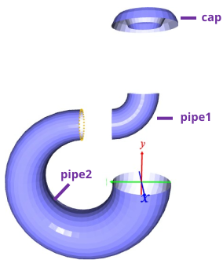
メッシュで調整した配置をそのまま .npy に書き出せないので(^^;)
即席ツールで npy を平行移動する。
python translate.py cap_transposed.npy 0 5 0
python translate.py pipe1_bended.npy 0 3 0
[5] 部品をつなぐ
pipe1 と pipe2 はオモテとウラの接続になるので, surfaceコマンドに任せたい。
⇒ pipe1 と pipe2 の間が始点、終点となるように .npy を(即席ツールで)連結する。
python cat_npy.py pipe1_bended_translated.npy cap_transposed_translated.npy pipe2_thinned_bended.npy
連結した .npy をロードして表示する。
l stacked.npy
surface pclose
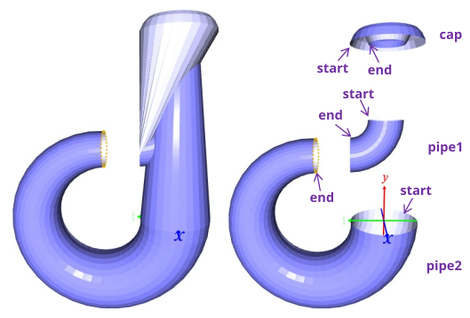
pipe1 の 終端(end)と cap の 始端(start) をつなぐので, こうなった。
pipe1 の始端と終端を入れ替える。
l pipe1_bended_translated.npy
p2 reverse e ･･･ 押し出し方向の順番を逆順にする
p2 save _pipe1.npy
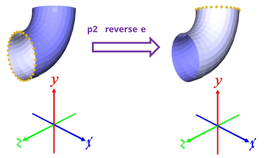
頂点の並びが変わり、法線の向きが変わるため, 表示のウラとオモテが反対になる。
が,気にせず進める。
cap.npy も始端と終端を入れ替える。
l cap_transposed_translated.npy
p2 reverse e
p2 save _cap.npy
連結しなおす。
python cat_npy.py _pipe1.npy _cap.npy pipe2_thinned_bended.npy
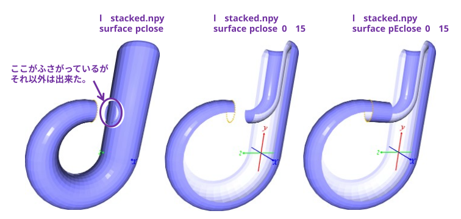
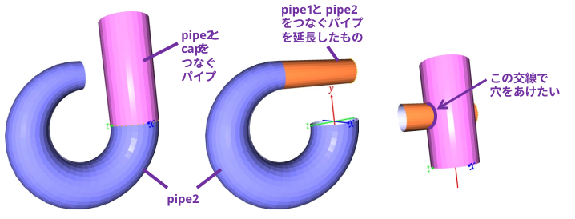
面と面の交線を求めて穴をあけるのも大変そうなので、manifold3d のブーリアン演算をありがたく使わせておう。
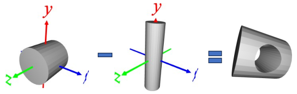
Open3D で作ったシリンダー(*)同士だと、簡単にブーリアン演算できたが、自前のメッシュだとなぜかブーリアン演算に失敗する･･･
* o3d.geometry.TriangleMesh.create_cylinder で作ったシリンダーのこと。
[1] Open3D で作ったシリンダーを使って、切り口を求める。
l _pipe1.npy ･･･ パイプ 1 データをロード
surface pclose ･･･ 可視化(メッシュ化)
p pop 0 ･･･ 始端の切り口を Points[ ]にコピーする。(終端の場合は、p pop -1 )
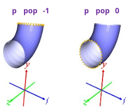
p i ･･･ Points[ ]の情報を表示
(例)
x 1.000000 -0.500000 - 0.500000 ･･･ 半径 0.5
y 0.994522 1.508217 - 2.502739
z 0.000000 0.994522 - 0.994522
cylinder (半径) (高さ) [(解像度 ･･･ 天板, 底面の円周上の点の数)]
cylinder 0.5 3 ･･･ 半径 0.5, 高さ 3 のシリンダーを作る
t 0 2 0 ･･･ y 軸方向に 1.5 持ち上げる
save yoko.ply ･･･ セーブする
cylinder 1 3 ･･･ 半径 1, 高さ 3 のシリンダーを作る
r 90 0 0 ･･･ x 軸周りに90°回転する
t 0 1.5 0 ･･･ y 軸方向に 1.5 持ち上げる
save tate.ply ･･･ セーブする
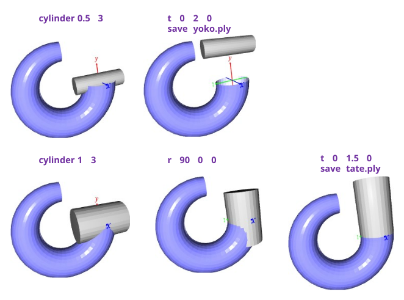
即席ツールで tate.ply － yoko.ply のブール演算を行う。
python boolean.py tate.ply yoko.ply
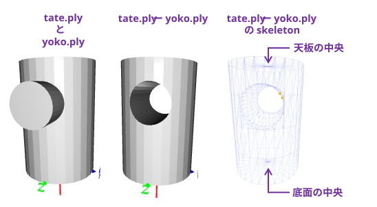